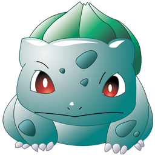
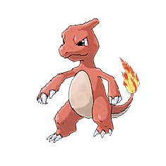
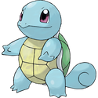

-
Bulbasaur #001
- Planta
- Veneno
Há uma semente de planta em suas costas desde o dia que este Pókemon nasceu. A semente cresce lentamente.
-
Ivysaur #002

- Planta
- Veneno
Quando o bulbo em suas costas cresce, parece perder a capacidade de ficar de pé em suas patas traseiras.
-
Venusaur #003

- Planta
- Veneno
Sua planta florece quando está absorvendo energia solar. Ele permanece em movimento para buscar a luz solar.
-
Charmander #004

- Fogo
Tem preferência por coisas quentes. Quando chove, diz-se que o vapor jorra da ponta de sua calda.
-
Charmeleon #005
- Fogo
Quando balança a cauda em chamas, a temperatura ao seu redor sobe cada vez mais, atormentando seus oponentes.
-
Charizard #006

- Fogo
Se Charizard ficar realmente angustiado, a chama na ponta da cauda queima em um tom azul claro. Usa suas asas para voar nas alturas. Quanto mais experiência ganha em batalha, maior a temperatura em que suas chamas queimam.
-
Squirtle #007
- Água
Sua casca fica macia imediatamente após nascer. Em pouco tempo, a casca se torna tão resistente que um dedo cutucante vai saltar direto dela.
-
Wartortle #008

- Água
Muitas vezes se esconde na água para espreitar presas incautas. Enquanto nada rapidamente, move as orelhas para manter o equilíbrio.
-
Blastoise #009

- Água
Tem bicos de jato em sua concha. Este impressionante Pokemon usa estes jatos para atacar inimigos com toda a força de um foguete.
-
Caterpie #0010

- Inseto
Seus pés curtos são digitados com almofadas de sucção que lhe possibilitam subir incansavelmente encostas e paredes.